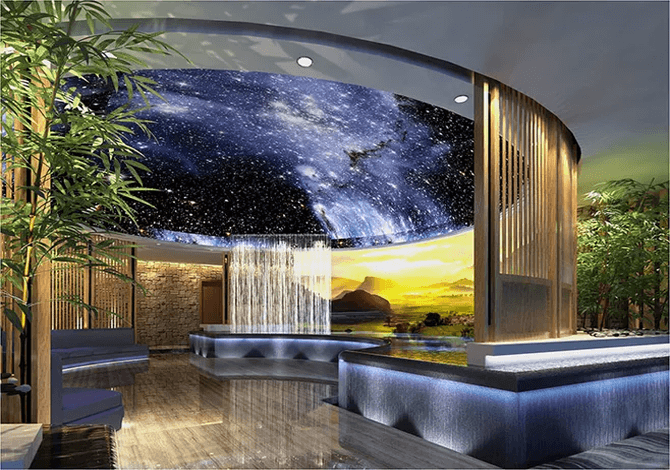

成功经验分享
Successful Experiences加盟商A | 行业转型
当初在金融行业奋斗了十多年，也有了一定管理能力和资本累积，希望创业，但除了原本的工作外，对其它生意都没有什么经验，我认为加盟一个平台是很好的途径。
通过了解，直播行业的前景和利润都非常吸引我。在不断的甄选后，最终选择了美岁直播这个平台。在加盟后，我感受最大的就是对加盟商的落地支持非常完整，无论是运营中心的选址、主播和业务团队的招聘、人员培训的支持，还是小到印一张名片，都有相应的解决。
目前，我已成功经营着2家运营中心，随着美岁直播的不断创新与发展，作为加盟商的我，各方面的能力也随之得到了很大的提升。做事一定要做自己喜欢的、有前景的，只要你用心，选对渠道，就一定会成功！
加盟商B | 自主创业
我有幸加入美岁直播这个大家庭，成功地在开始了我的二次创业。目前，我经营着1家城市运营中心。作为企业主，我们往往会很担心人员的招募，美岁直播在这方面也有非常完善的招募甄选流程提供支持。这些使得我可以更加全身心地投入运营中心的日常管理，带领好我们的团队，创造更丰厚的利润。
加盟商C | 行业转型
在加入美岁之前，由于自身性格比较急躁，我常常喜欢按照个人的想法去管理企业。加入之后，总部要求我们不仅是一个投资方，更要成为一名优秀的管理者。加盟商如果希望发展，就必须要通过管理团队严格而且系统的培训和检定，总部还会安排加盟商不定期的参加一些管理专业方面的外部培训。通过这一系列的训练，使我享受到了专业管理所带来的丰硕成果，成功的背后离不开美岁的支持。
加盟商D | 行业转型
大家好，我一直在直播行业摸爬滚打，经营着一家传媒公司。去年，我从其他平台退出后加盟美岁直播，我最看重的是美岁直播与传统的直播模式不同，从被动的直播模式转变为了主动出击。并且可以根据自己团队主播的情况，通过MCN打造流量矩阵，不再“靠天吃饭”，团队营收有了大幅增长。